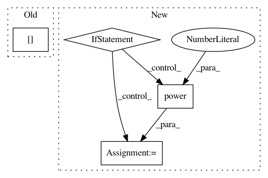

bc103972a80978e6ca0a41d33925b5f2e28ad9c8,cistar-dev/cistar/controllers/base_controller.py,BaseController,safe_velocity,#BaseController#Any#,57
Before Change
this_pos = env.get_x_by_id(self.veh_id)
//This is not being used?
this_vel = env.vehicles[self.veh_id]["speed"]
d = (this_pos + lead_length) - lead_pos - np.power((lead_vel),2)/(2*self.max_deaccel)
v_safe = (-self.max_deaccel*self.delay +
After Change
this_pos = env.get_x_by_id(self.veh_id)
// need to account for the position being reset around the length
if lead_pos > this_pos:
d = (this_pos + lead_length) - lead_pos - np.power((lead_vel),2)/(2*self.max_deaccel)
else:
loop_length = env.scenario.net_params["length"]
d = (this_pos + lead_length) - (lead_pos + loop_length) - np.power((lead_vel),2)/(2*self.max_deaccel)
v_safe = (-self.max_deaccel*self.delay +
np.sqrt(self.max_deaccel)*np.sqrt(-2*d+self.max_deaccel*self.delay**2))
return v_safe
In pattern: SUPERPATTERN
Frequency: 3
Non-data size: 4
Instances
Project Name: flow-project/flow
Commit Name: bc103972a80978e6ca0a41d33925b5f2e28ad9c8
Time: 2017-03-08
Author: eugenevinitsky@users.noreply.github.com
File Name: cistar-dev/cistar/controllers/base_controller.py
Class Name: BaseController
Method Name: safe_velocity
Project Name: automl/auto-sklearn
Commit Name: 1ec4287799a1ccfc019f564f3ce0de468de6e313
Time: 2015-04-09
Author: springj@informatik.uni-freiburg.de
File Name: ParamSklearn/implementations/ProjLogit.py
Class Name: ProjLogit
Method Name: predict_proba
Project Name: automl/SMAC3
Commit Name: 640a3574b411e4c91add7acd3fa21595d8f63c28
Time: 2016-03-07
Author: lindauer@informatik.uni-freiburg.de
File Name: smac/epm/rfr_imputator.py
Class Name: RFRImputator
Method Name: impute